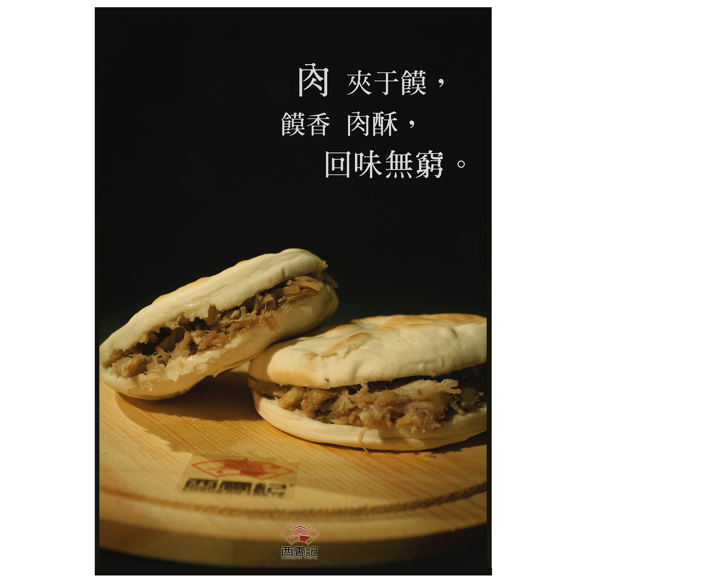

Poster Campaign for THE CHANGAN'S TASTE / Chinese Version / Digital Photographic Poster / Hong Kong / 2015
Raw food materials can be as attractive as the food itself. Revealing the change of materials, the procedure of cooking step by step beckons everyone.

Poster Campaign for VAN GOGH ALIVE X UBER / Chinese Version / Digital Poster / China / 2015
VAN GOGH ALIVE X UBER, the cross-boundary campaign was launched by UBER company and the VAN GOGH ALIVE experience in the summer of 2015 with 9 posters for the promotion.